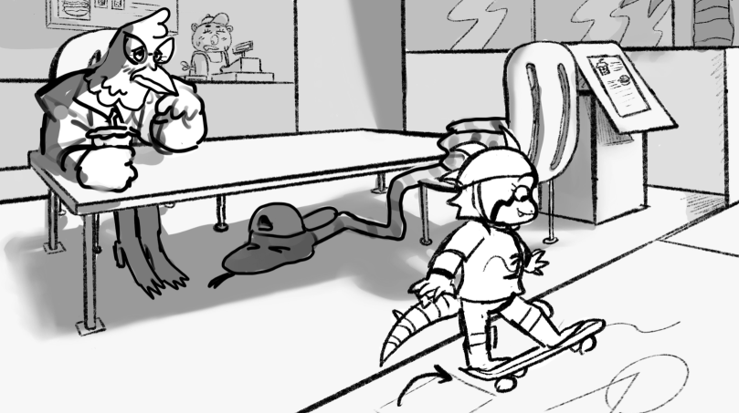

she likes painting. | Storyboard for an animated short produced by a few coworkers and I for a short film challenge. I also drew environments and did some compositing on final film.

Hot as Hell | Storyboards for the opening sequence of my capstone student film at Griffith University